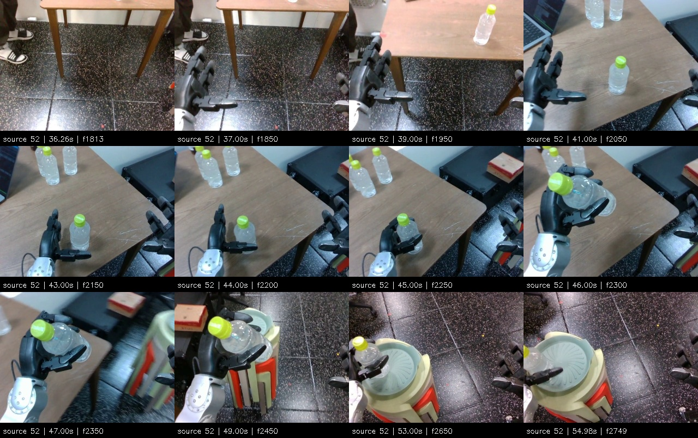
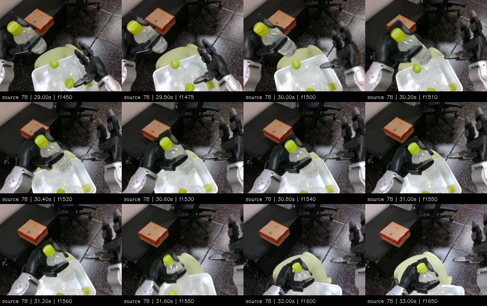

Source 52: previous return-to-start removed
Retained rows remain unlabeled. A hold near the stool does not qualify as the source-table pick finish. Original frames 1813–2749, 18.74 seconds.
Sampled source frames

Source 52 excludes original frames 0–1812. Source 78's placement failed when the basket was pushed off the stool. All displayed source frame numbers remain in the original 50 fps recording. Clip time is rebased only for playback.
Retained rows remain unlabeled. A hold near the stool does not qualify as the source-table pick finish. Original frames 1813–2749, 18.74 seconds.

User-confirmed failure around source frames 1500–1600. Later bottle release does not make this a successful placement. Original frames 1450–1650, 4.02 seconds.

Source 78, full first 46 seconds: failure reference including later release
Corrections and training status. No positive subskill labels have been accepted; training has not started.